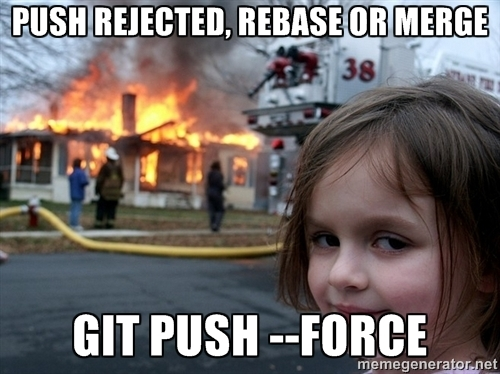

What is GIT?
Baby don't hurt me
Don't hurt me
No more...
What is WordPress?
What is a VPS?
Virtual Private Server
VPS providers
Workshop

Steps 1/2
GIT != GITHUB
- Create a github.com account
- Fork the tr.im/demo
- Clone locally
- Create a page template with your name
- Push to github and send pull request
Steps 2/2
Deploy to VPS *
On VPS
- Setup machine, (sub)domain
- Init bare git repo
- Configure post-receive hook to web folder
Locally
- Configure remote push repo (git remote add)
- Push to VPS
Links
- Demo theme: http://tr.im/demo
- Presentation: http://tr.im/ppt
- Automatic deployment with GIT: http://tr.im/gitvps
- Github Edu: education.github.com
- Reveal.js: tr.im/reveal
- Meme generator: memegenerator.net